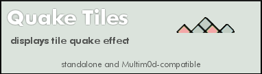

quake_tiles.lua |
|
|---|---|
Quake TilesRenders configurable quake-like ground tile effects. Standalone & Multim0d-compatible nov 3 2009 jm ervin  Properties section |
|
|
Metaplace Lua included script state variables via properties that could be hidden, exposed or persisted. Here there are "constant" properties as well as user-config properties. Vars deemed contstant-by-convention are indicated by ALL CAPS |
Define Properties()
inited = false
im_running = false
|
|
declare default and/or hot-start values for any public properties. |
QUAKE_TILES_DEFAULT_X = 1
QUAKE_TILES_DEFAULT_Y = 1
QUAKE_TILES_DEFAULT_W = 1
QUAKE_TILES_DEFAULT_H = 1
QUAKE_TILES_DEFAULT_DELAY = 0
QUAKE_TILES_DEFAULT_MAGNITUDE = 2
QUAKE_TILES_DEFAULT_DENSITY = 20
QUAKE_TILES_DEFAULT_BASE_ELEV = 127
QUAKE_TILES_LOOP_TIME_MS = 220
QUAKE_TILES_CLEANUP_FLAG = 0
QUAKE_TILES_REPS = 8
|
|
Some arbitrary, though platform-oriented bounds on rate variables. |
QUAKE_TILES_MIN_LOOP_MS = 50
QUAKE_TILES_MAX_MAGNITUDE = 8
|
|
Some silly Tool issues compelled this bit of egregiousness. |
param_count = 11
|
|
User-accessible Properties |
quake_tiles_x = QUAKE_TILES_DEFAULT_X
PersistProperty('quake_tiles_x')
ExposeProperty('quake_tiles_x', 'upper-left x value of playback area (default: ' ..QUAKE_TILES_DEFAULT_X ..")")
quake_tiles_y = QUAKE_TILES_DEFAULT_Y
PersistProperty('quake_tiles_y')
ExposeProperty('quake_tiles_y', 'upper-left y value of playback area (default: ' ..QUAKE_TILES_DEFAULT_Y ..")")
quake_tiles_w = QUAKE_TILES_DEFAULT_W
PersistProperty('quake_tiles_w')
ExposeProperty('quake_tiles_w', 'playback area width (default: ' ..QUAKE_TILES_DEFAULT_W ..")")
quake_tiles_h = QUAKE_TILES_DEFAULT_H
PersistProperty('quake_tiles_h')
ExposeProperty('quake_tiles_h', 'playback area height (default: ' ..QUAKE_TILES_DEFAULT_H ..")")
quake_tiles_delay = QUAKE_TILES_DEFAULT_DELAY
PersistProperty('quake_tiles_delay')
ExposeProperty('quake_tiles_delay', 'Startup delay. (default: ' ..QUAKE_TILES_DEFAULT_DELAY ..")")
quake_tiles_magnitude = QUAKE_TILES_DEFAULT_MAGNITUDE
PersistProperty('quake_tiles_magnitude')
ExposeProperty('quake_tiles_magnitude', 'Magnitude (default: ' ..QUAKE_TILES_DEFAULT_MAGNITUDE ..")",'int')
SetPropRange('quake_tiles_magnitude',1,QUAKE_TILES_MAX_MAGNITUDE)
quake_tiles_density = QUAKE_TILES_DEFAULT_DENSITY
PersistProperty('quake_tiles_density')
ExposeProperty('quake_tiles_density', 'Number of shakes per rep. (default: ' ..QUAKE_TILES_DEFAULT_DENSITY ..")")
quake_tiles_base_elev = QUAKE_TILES_DEFAULT_BASE_ELEV
PersistProperty('quake_tiles_base_elev')
ExposeProperty('quake_tiles_base_elev', 'Base elevation of floor region affected by quake. (default: ' ..QUAKE_TILES_DEFAULT_BASE_ELEV ..")")
|
|
Effect repetition count. Not required but often useful for clustering effect actions. The included logic here is for a count-down rep counter. |
current_rep = QUAKE_TILES_REPS
quake_tiles_reps = QUAKE_TILES_REPS
PersistProperty('quake_tiles_reps')
ExposeProperty('quake_tiles_reps', 'Number of repetitions per run. (default: ' ..QUAKE_TILES_REPS ..")")
quake_tiles_loop_time_ms = QUAKE_TILES_LOOP_TIME_MS
PersistProperty('quake_tiles_loop_time_ms')
ExposeProperty('quake_tiles_loop_time_ms', 'Looping interval, in milliseconds. (caution!) (default: ' ..QUAKE_TILES_LOOP_TIME_MS ..")")
quake_tiles_cleanup_flag = QUAKE_TILES_CLEANUP_FLAG
PersistProperty('quake_tiles_cleanup_flag')
ExposeProperty('quake_tiles_cleanup_flag', 'Cleanup after each run. (default: OFF)', 'checkbox')
|
|
Specify the call signature here. This is just an informative string and should indicate all parameters (in order) needed to manually call this plugin. Param onchanges are caught and reverted, SEE "parm_changed" method |
PARAMS_SIGNATURE = " X, Y, W, H, DELAY(ms), MAGNITUDE(1..8), SHAKES-PER-REP, BASE-ELEV, #REPS, LOOP-TIME(ms), PER-RUN-CLEANUP? (0 or 1)"
PARAMS_SIGMSG = "Parameters signature used for manual mode calls (read-only)"
quake_tiles_signature = PARAMS_SIGNATURE
ExposeProperty('quake_tiles_signature', PARAMS_SIGMSG)
|
|
Standard required tool version, name and description fields |
bt_behavior = 1
bt_name = 'quake_tiles'
bt_desc = 'a ground quake effect'
bt_help_image = '204478:10'
bt_help_height = 108
end
|
Methods and Handlers[ Triggers would be called by the sim serverside, given the appropriate conditions ] Param Changed [Required Boilerplate] This is a mild bit of hackery. The Call Signature of an effect needed to be displayed on the Behavior Tool, but there was no way to write R/O text, only text that could be potentially altered by the user. As a workaround each Multim0d effect would respond to the BT onchange trigger in order to revert attempted changes to any public properties that needed to be R/O, such as the call signature. |
Trigger param_changed(owner, owner_id, script_id, prop)
local pname = self.bt_name .."_signature"
if (prop == pname) then
Debug("< SIG CHANGED > " .."script_id=" ..script_id .." owner_id=" ..owner_id)
SendTo(self, 'set_script_param', 0, owner, owner.id, script_id, prop, self.PARAMS_SIGNATURE)
Debug("reverting signature, you silly rabbit!")
end
end
|
|
Cleanup [API, Optional] Restore source tiles to whatever they were prior to the effect run. |
function quake_tiles_cleanup(owner,do_cleanup,x0,y0,xr,yr,e)
if (do_cleanup==1) then
Debug(owner.bt_name ..': Cleanup called!')
local xm = x0 + (xr-1)
local ym = y0 + (yr-1)
for i=x0,xm do
for k=y0,ym do
SetElevAt(i,k,e)
end
end
end
end
|
|
Process a frame iteration. This creates a round of a shaking effect by manipulating the tile elevation. Do the shaking. Note: the density property sets the number of "shakes" per iteration. |
Trigger quake_tiles(x0,y0,xr,yr)
local delta_e = self.quake_tiles_magnitude
for i=1,self.quake_tiles_density do
if (math.random(50) < 25) then
e = self.quake_tiles_base_elev - math.random(delta_e)
else
e = math.random(delta_e) + self.quake_tiles_base_elev
end
SetElevAt((math.random(xr-1) + x0),(math.random(yr-1) + y0),e)
end
|
|
Reloop if running, otherwise do any cleanup and signal completion. |
if (self.im_running == true) then -- repeat for fixed num of reps
self.current_rep = self.current_rep -1
if (self.current_rep >0) then
SendTo(self,self.bt_name,self.quake_tiles_loop_time_ms,x0,y0,xr,yr)
else -- reps completed. reset rep counter to start val
self.current_rep = self.quake_tiles_reps
Debug('quake_tiles completed.')
quake_tiles_cleanup(self,self.quake_tiles_cleanup_flag, x0,y0,xr,yr,self.quake_tiles_base_elev)
self.im_running = false
SendTo(self,'multimod_cmd_done',0)
end
else -- run has been stopped by main:
quake_tiles_cleanup(self,self.quake_tiles_cleanup_flag, x0,y0,xr,yr,self.quake_tiles_base_elev)
self.im_running = false
SendTo(self,'multimod_cmd_done',0)
end
end
|
|
Init [API, Optional] any one-time init items go here. Not much interesting in this one... |
function quake_tiles_init(owner)
owner.inited = true
end
|
|
Validate [API, Optional] Parameter validations. Validations will probably be custom for each effect, but should complement any range-control done by the Behavior Tool. |
function quake_tiles_validate_params(owner,p)
p[1] = math.abs(p[1])
p[2] = math.abs(p[2])
p[3] = math.abs(p[3])
p[4] = math.abs(p[4])
p[5] = math.abs(p[5])
if (tonumber(p[6]) > owner.QUAKE_TILES_MAX_MAGNITUDE) then
p[6] = owner.QUAKE_TILES_MAX_MAGNITUDE
end
p[7] = math.abs(p[7])
p[8] = math.abs(p[8])
p[9] = math.abs(p[9])
if (tonumber(p[10]) < owner.QUAKE_TILES_MIN_LOOP_MS) then
p[10] = owner.QUAKE_TILES_MIN_LOOP_MS
end
p[11] = math.abs(p[11])
end
|
|
Mod Shutdown [API, REQUIRED] Here this is mostly just a simple wrapper. Vary the internals as desired, just be sure to invoke a crisp shutdown! |
Trigger mod_shutdown()
if (self.im_running == true) then
Debug(self.bt_name .." mod_shutdown recieved")
end
self.im_running = false
end
|
|
Standalone Shutdown [API, Optional] Handle shutdown for standalone mode. |
Trigger quake_tiles_shutdown()
self.im_running = false
SendTo(self,'multimod_cmd_done',0)
Debug(self.bt_name .." shutdown called!")
end
|
|
Trigger for standalone usage [API, Optional] |
Trigger use(user)
if (self.multimod_present == nil) then
Debug("- Standalone mode -")
if (self.im_running == false) then
self.im_running = true
self.current_rep = self.quake_tiles_reps
Debug(self.bt_name ..' - running -')
SendTo(self,self.bt_name,self.quake_tiles_delay,self.quake_tiles_x,self.quake_tiles_y,self.quake_tiles_w,self.quake_tiles_h)
else
Debug("MANUAL HALT!")
SendTo(self,self.bt_name ..'_shutdown',0)
self.im_running = false
end
end
end
|
|
Startup [API, Required] Main entry point for the effect. This is called by the Player and is passed a Player-opaque, possibly empty table of support params. This call starts the plugin running and should behave idempotently. |
Trigger quake_tiles_startup(xparams)
if (self.im_running == false) then -- indicate state change
self.im_running = true
if (self.inited == false) then -- assure init
quake_tiles_init(self)
end
|
|
|
|
|
if (#xparams ~= 0) then
if (#xparams == self.param_count) then
quake_tiles_validate_params(self,xparams)
self.quake_tiles_x = xparams[1]
self.quake_tiles_y = xparams[2]
self.quake_tiles_w = xparams[3]
self.quake_tiles_h = xparams[4]
self.quake_tiles_delay = xparams[5]
self.quake_tiles_magnitude = xparams[6]
self.quake_tiles_density = xparams[7]
self.quake_tiles_base_elev = xparams[8]
self.quake_tiles_reps = xparams[9]
self.quake_tiles_loop_time_ms = xparams[10]
self.quake_tiles_cleanup_flag = xparams[11]
else
Debug(self.id ..": " ..self.bt_name .." ERROR: Manual mode: incorrect number of playlist params")
Debug('required: ' ..self.param_count .."params, got " ..#xparams )
end
end
self.current_rep = self.quake_tiles_reps
Debug(self.bt_name ..' - running -')
SendTo(self,self.bt_name,self.quake_tiles_delay,self.quake_tiles_x,self.quake_tiles_y,self.quake_tiles_w,self.quake_tiles_h)
else -- Catch a variety of error conditions that may fail to properly set the effect "finished" flag.
Debug(self.bt_name ..' sez: not yet...')
self.im_running = false
end
end
|